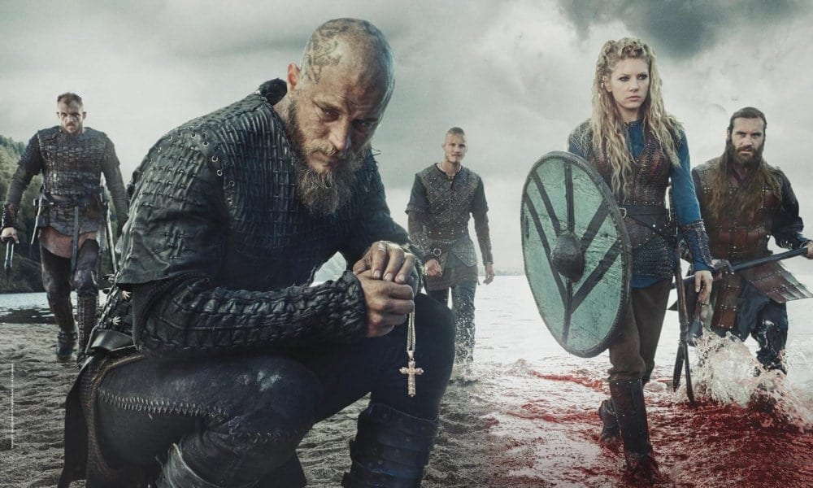

A Guerra Para Os Vikings
Os vikings ou nórdicos da Era Viking são extremamente famosos por terem sido exímios guerreiros que atacavam e pilhavam diversos locais da Europa na Idade Média.

"A guerra era importante para os vikings?"
"A guerra cumpria uma função muito importante dentro da sociedade viking. Desempenhava, por exemplo, papéis políticos e religiosos. Além disso, a guerra trazia status para os que nela se envolviam – e sobreviviam. Naturalmente, também trazia riquezas."
"Na questão religiosa, os vikings acreditavam que os tombados em batalha iriam juntar-se a Odin em seu salão, conhecido como Valhalla. Para os vikings, os guerreiros mortos em batalha haviam sido escolhidos pelas valquírias para tornarem-se einherjar, guerreiros que passariam as eras em Valhalla e que lutariam durante o Ragnarök."
"Dentro da sociedade viking, todo homem livre poderia tornar-se um guerreiro. O treinamento para guerra era, geralmente, realizado por um membro da própria família. Os jarls (nobres), em virtude de sua situação financeira superior, tinham condição de financiar um treinamento mais intenso e especializado
"Quais eram as armas utilizadas pelos vikings em batalha?
"O historiador Sandro Teixeira Moita destaca que espada e machado eram as armas mais populares que os vikings utilizavam em combate. Outras armas, como lança, facas e arco e flecha, eram menos utilizadas, mas não menos importantes|1|. Em questões de defesa, os vikings usavam escudos de madeira, elmos (sem chifres) e cota de malha.
A espada era o armamento mais utilizado e, além da sua importância bélica, trazia um grande status para aquele que a possuía. Produzir uma espada era algo muito caro na Escandinávia da Era Viking, por isso, somente aqueles que tinham uma melhor condição financeira poderiam arcar com os custos de produção.
As espadas eram confeccionadas, geralmente, na Escandinávia, mas existem evidências de que parte delas era adquirida dos Francos. Quanto maior a capacidade financeira da pessoa, mais adornada seria sua espada. Em determinadas famílias, essa arma era transmitida para as gerações seguintes, mas havia casos de guerreiros que preferiam ser cremados em posse de sua espada
Os machados eram utilizados, principalmente, nos ataques de pirataria. Por serem armas mais baratas, seu uso estava difundido no cotidiano dos vikings, o que fazia com que muitos possuíssem grande destreza no domínio desse armamento.
A lança, apesar de menos utilizada, tinha um grande valor simbólico, pois era a arma utilizada por Odin (a lança de Odin chamava-se Gungnir). Por isso, antes das batalhas, os vikings arremessavam uma lança com o objetivo de obter o favor de Odin. No caso das facas, eram utilizadas em batalhas corpo a corpo, em distâncias curtas. Já o arco e flecha era mais utilizado em casos de pilhagem e batalhas navais.
Os escudos eram a arma defensiva mais importante dos vikings. Em incursões navais, por exemplo, só participavam aqueles que possuíssem um escudo. Os escudos vikings eram feitos de madeira e reforçados com uma faixa metálica no centro. Eram pintados de diferentes cores e utilizados na formação de guerra mais famosa dos vikings: a parede de escudos.
Esse povo também utilizava elmos para a proteção do rosto. É válido ressaltar que os elmos dos vikings não possuíam chifres. Além disso, também eram utilizadas para defesa cotas de malha, armaduras metálicas e armaduras de couro.
"Existiam mulheres guerreiras entre os vikings?
Essa questão divide historiadores e arqueólogos, pois as evidências literárias são conflitantes. Os registros lendários trazem uma série de exemplos de mulheres que guerreavam, mas, nas sagas islandesas ou de família, não há nenhum registro nesse sentido. Além disso, pesquisas arqueológicas não revelam evidências concretas de que a participação feminina na guerra era consistente.
As pesquisas na área da Osteologia, que investiga, nesse caso, lesões nos ossos causadas por armas de combate, também não encontraram evidências concretas em tumbas femininas. No entanto, há uma exceção arqueológica de um caso mencionado por Johnni Langer. Esse historiador fala que foi encontrada na Suécia a tumba de uma mulher, onde havia uma grande quantidade de armamentos junto dos restos mortais|2|.
Dessa forma, a conclusão existente neste momento é de que haviam algumas mulheres que se tornavam guerreiras na sociedade, mas esse tipo de comportamento não era comum na época.
Os guerreiros vikings na cultura popular
Os vikings são um dos assuntos que mais geram interesse na cultura pop. Por isso, uma série de produções foi realizada nos últimos anos. Na literatura, um dos nomes mais conhecidos são as Crônicas Saxônicas, série de livros que acompanha a história de um saxão criado por dinamarqueses. Esse personagem luta contra vikings que invadiram a Bretanha e os reinos que lá existiam. Essa série de livros gerou, inclusive, uma adaptação para a TV: The Last Kingdom, em português, O Último Reino.
Vikings é o nome de outra série bem famosa sobre o assunto e narra os acontecimentos da vida do personagem Ragnar e de seus filhos.
Quem eram os vikings?
O termo “viking” é utilizado como referência aos povos que habitavam o norte da Europa, na região da Escandinávia, durante o período da Era Viking, que se estendeu do século VIII ao século XI. Esse termo também tem relação direta com uma prática bastante conhecida: as expedições navais. É comum também o uso da expressão “nórdicos” para se referir a esse povo, principalmente nas situações em que as expedições náuticas não são o foco.
Os vikings ficaram muito conhecidos, sobretudo na cultura popular, como guerreiros temíveis. Invadiam de surpresa determinados locais, como o Reino dos Francos (região litorânea da Europa), buscando pilhar o máximo de riquezas possíveis.